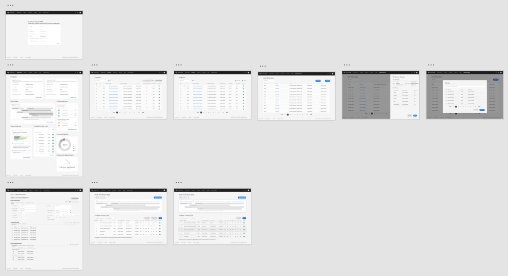

Experience as One Adobe - Accelerating Reporting & Strategic Planning

UX Design
UX Designer
Sole Designer
Due to NDA, I only showcase my design process on this page.
If you want to know more about this project,
you can access the detailed design (Adobe Internal Access Only) or shoot me an email.
In summer 2017, I interned at Adobe's headquater in San Jose, California as a UX Designer on the Business Operations & Planning team.
I was working on the product design of Adobe PPM 2.0 (Project Portfolio Management) where everyone at Adobe can access projects, align with corporate strategy, manage portfolio, and work as One Adobe.
In the 12 weeks, I worked with PMs, software engineers, and design mentors to create seamless and meaningful user experience to accelerate the reporting and strategic planning across Adobe.
The Adobe PPM 1.0 was built several years ago upon several different applications. Adobe has evolved a lot since then, making most of the functionalities in Adobe PPM 1.0 redundant and outdated. Adobe employees are hoping for a better management application that helps them manage projects and align with company strategy.

Screens of Adobe PPM 1.0
After analyzing surveys, interview data, and conducting heuristic evaluation on current application, I worked with the product manager and my team to identify the key issues of Adobe PPM 1.0:
My team had conducted preliminary research by interviewing and surveying users across different positions.
Based on our research insights, I created four personas.
Each persona will have different view, task, and access.
Based on the different tasks of each persona, I built the user workflow to demonstrate how they will use Adobe PPM 2.0 to achieve their goals.
Adobe PPM 2.0 User Workflow
I also constructed the sitemap (information architecture) by analyzing the existing architecture and future vision. The new PPM will keep only the essential functions and be accessible on both web and mobile(not in scope).

Adobe PPM 2.0 Sitemap
As the only designer in the team, I worked through 6 rounds of design iterations to get to the final mockups and prototype. Adobe PPM 2.0 covers the primary functions of reporting, project recording, strategy alignment, portfolio management. It also provides an intuitive dashboard which presents the key information and project changes, as well as smart notifications that help simplify the workflow.
Starting from "scratch", I first distilled the most important information sections and rephrased them in to different pods that enable flexibility on different screen sizes. I also designed a dashboard that consists of succinct data from different tabs.

However, the information presentation in iteration 1 is still to overwhelming and patterns used are not consistent. So the second iteration focused on understanding what is really important to users and only keep the relevant data on the dashboard and front page. In addition, I also explored the interaction patterns used in table design such as 'drawers', 'modal screen', and 'breadcrums'.
Continueing with iteration 2, this iteration dealt with designing forms and the interface for editing forms. I iterated through different layout by experimenting with margins, font size, paddings, and button positions. In addition, I also learnt how to choose button styles more wisely (e.g. using CTA buttons only once for proceeding to next steps, group action buttons together as a toolbar).

In this iteration, I looked at tables again to explore the four key aspects:

In iteration 5, I started to look at the 'automated workflow' and how the interface would look like for different personas. I created a user workflow cycle engaging all three primary personas and bridged the gap between them by designing micro-interactions like useful feedback and smart notifications.

This is the last round during my internship. I refined the icon styles, unified margins/paddings, adjusted color palette to create pixel-perfect hi-fidelity mockups. I also created a working prototype to help my team present the new solution to stakeholders.

I designed more than 100 mockups and two prototypes. My team will use my design as demonstration for the new solution to get more buy-in from different BUs across Adobe.
I worked with the HIVE (a one-day meeting that accelerates decision-making) team to improve the post-HIVE experience. I conducted research and made a prototype for capturing the meeting outputs. And the team adopted my prototype!
I helped my team to design a placemat with contest to market the management framework and new solution to more Adobe employees. We received more than 20 submissions in two weeks!